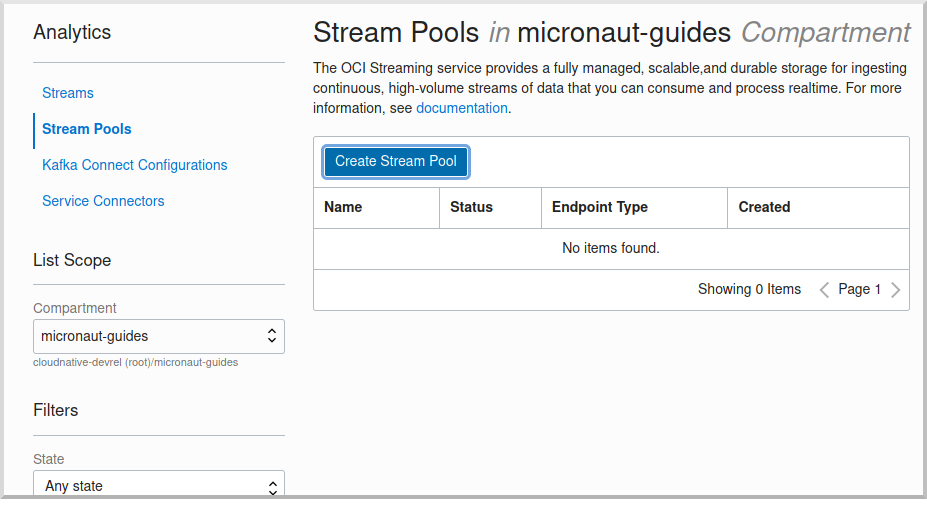

mn create-app --features=kafka,graalvm,reactor,testcontainers example.micronaut.chess-game --build=gradle --lang=groovyOracle Cloud Streaming and the Micronaut Framework - Event-Driven Applications at Scale
Use Oracle Cloud Streaming to communicate between your Micronaut applications.
Authors: Burt Beckwith
Micronaut Version: 3.9.2
1. Getting Started
In this guide, we will create two Micronaut microservices written in Groovy that will use Oracle Cloud Streaming to communicate with each other in an asynchronous and decoupled way.
2. What You Will Need
To complete this guide, you will need the following:
-
Some time on your hands
-
A decent text editor or IDE
-
JDK 11 or greater installed with
JAVA_HOMEconfigured appropriately -
An Oracle Cloud account (create a free trial account at signup.oraclecloud.com)
-
Oracle Cloud CLI installed with local access to Oracle Cloud configured by running
oci setup config -
Docker and Docker Compose installed if you will be running Kafka in Docker and for running tests.
3. Solution
We recommend that you follow the instructions in the next sections and create the application step by step. However, you can go right to the completed example.
-
Download and unzip the source
4. Writing the Application
The microservices will use Oracle Cloud Streaming and the Kafka API to send and receive messages. The messages will represent chess gameplay events, including game start and end and each move.
The microservices are:
-
chess-game- Has a simple JavaScript and Ajax UI that renders a variable number of chess games that will be auto-played to generate many events -
chess-listener- Receives the chess event messages and persists them to a database
4.1. chess-game Microservice
Create the chess-game microservice using the Micronaut Command Line Interface or with Micronaut Launch.
If you don’t specify the --build argument, Gradle is used as the build tool. If you don’t specify the --lang argument, Java is used as the language.
|
If you use Micronaut Launch, select Micronaut Application as application type and add the kafka, graalvm, reactor, and testcontainers features.
The previous command creates a directory named chess-game and a Micronaut application inside it with default package example.micronaut.
In addition to the dependencies added by the testcontainers feature, we also need a test dependency for Kafka in Testcontainers, along with one for the Awaitility library:
build.gradle
testImplementation("org.testcontainers:kafka")
testImplementation("org.awaitility:awaitility:4.2.0")4.1.1. DTOs
Create an enum for the chess players:
chess-game/src/main/groovy/example/micronaut/chess/dto/Player.groovy
package example.micronaut.chess.dto
import com.fasterxml.jackson.annotation.JsonValue
enum Player {
WHITE('w'),
BLACK('b');
private final String color
Player(String color) {
this.color = color
}
@JsonValue
String toString() {
color
}
}Create a GameDTO data-transfer object to represent game data:
chess-game/src/main/groovy/example/micronaut/chess/dto/GameDTO.groovy
package example.micronaut.chess.dto
import com.fasterxml.jackson.annotation.JsonTypeInfo
import groovy.transform.CompileStatic
import io.micronaut.core.annotation.Creator
import io.micronaut.core.annotation.Introspected
import io.micronaut.core.annotation.NonNull
import io.micronaut.core.annotation.Nullable
import javax.validation.constraints.NotNull
import javax.validation.constraints.Size
import static com.fasterxml.jackson.annotation.JsonTypeInfo.Id.NAME
@Introspected (1)
@JsonTypeInfo(use = NAME, property = '_className') (2)
@CompileStatic
class GameDTO {
@Size(max = 36)
@NotNull
@NonNull
final String id
@Size(max = 255)
@Nullable
final String blackName
@Size(max = 255)
@Nullable
final String whiteName
final boolean draw
@Size(max = 1)
@Nullable
final Player winner
@Creator (3)
GameDTO(@NonNull String id,
@Nullable String blackName,
@Nullable String whiteName,
boolean draw,
@Nullable Player winner) {
this.id = id
this.blackName = blackName
this.whiteName = whiteName
this.draw = draw
this.winner = winner
}
GameDTO(@NonNull String id,
@NonNull String blackName,
@NonNull String whiteName) {
this(id, blackName, whiteName, false, null)
}
GameDTO(@NonNull String id,
boolean draw,
@Nullable Player winner) {
this(id, null, null, draw, winner)
}
}| 1 | Annotate the class with @Introspected to generate BeanIntrospection metadata at compilation time. This information can be used, for example, to render the POJO as JSON using Jackson without using reflection. |
| 2 | Annotate with @JsonTypeInfo to include the class name without package in the "_className" property |
| 3 | Annotate with @Creator to indicate the constructor to use when deserializing from JSON |
Create a GameStateDTO data-transfer object to represent game move data:
chess-game/src/main/groovy/example/micronaut/chess/dto/GameStateDTO.groovy
package example.micronaut.chess.dto
import com.fasterxml.jackson.annotation.JsonTypeInfo
import groovy.transform.CompileStatic
import io.micronaut.core.annotation.Introspected
import io.micronaut.core.annotation.NonNull
import javax.validation.constraints.NotNull
import javax.validation.constraints.Size
import static com.fasterxml.jackson.annotation.JsonTypeInfo.Id.NAME
@Introspected (1)
@JsonTypeInfo(use = NAME, property = '_className') (2)
@CompileStatic
class GameStateDTO {
@Size(max = 36)
@NotNull
@NonNull
final String id
@Size(max = 36)
@NotNull
@NonNull
final String gameId
@Size(max = 1)
@NotNull
@NonNull
final Player player
@Size(max = 100)
@NotNull
@NonNull
final String fen
@NotNull
@NonNull
final String pgn
@Size(max = 10)
@NotNull
@NonNull
final String move
GameStateDTO(@NonNull String id,
@NonNull String gameId,
@NonNull Player player,
@NonNull String move,
@NonNull String fen,
@NonNull String pgn) {
this.id = id
this.gameId = gameId
this.player = player
this.move = move
this.fen = fen
this.pgn = pgn
}
}| 1 | Annotate the class with @Introspected to generate BeanIntrospection metadata at compilation time. This information can be used, for example, to render the POJO as JSON using Jackson without using reflection. |
| 2 | Annotate with @JsonTypeInfo to include the class name without package in the "_className" property |
4.1.2. GameReporter
Create a GameReporter Kafka client to send chess-related messages:
chess-game/src/main/groovy/example/micronaut/chess/GameReporter.groovy
package example.micronaut.chess
import example.micronaut.chess.dto.GameDTO
import example.micronaut.chess.dto.GameStateDTO
import io.micronaut.configuration.kafka.annotation.KafkaClient
import io.micronaut.configuration.kafka.annotation.KafkaKey
import io.micronaut.configuration.kafka.annotation.Topic
import io.micronaut.core.annotation.NonNull
import reactor.core.publisher.Mono
@KafkaClient (1)
interface GameReporter {
@Topic('chessGame') (2)
@NonNull
Mono<GameDTO> game(@NonNull @KafkaKey String gameId, (3) (4)
@NonNull GameDTO game)
@Topic('chessGameState') (2)
@NonNull
Mono<GameStateDTO> gameState(@NonNull @KafkaKey String gameId, (3) (4)
@NonNull GameStateDTO gameState)
}| 1 | Annotate the class with @KafkaClient to declare it as a Kafka message producer; the Micronaut framework will generate the sending code at compile time |
| 2 | Annotate the method with @Topic and specify the topic name |
| 3 | By returning a reactive type, the Micronaut framework will use non-blocking code to send the message |
| 4 | Use the Game primary key as the Kafka partition key |
4.1.3. GameController
Create a GameController class to contain Ajax endpoints for the front end:
chess-game/src/main/groovy/example/micronaut/chess/GameController.groovy
package example.micronaut.chess
import example.micronaut.chess.dto.Player
import example.micronaut.chess.dto.GameDTO
import example.micronaut.chess.dto.GameStateDTO
import groovy.transform.CompileStatic
import io.micronaut.http.annotation.Controller
import io.micronaut.http.annotation.PathVariable
import io.micronaut.http.annotation.Post
import io.micronaut.http.annotation.Status
import io.micronaut.scheduling.TaskExecutors
import io.micronaut.scheduling.annotation.ExecuteOn
import reactor.core.publisher.Mono
import static io.micronaut.http.HttpStatus.CREATED
import static io.micronaut.http.HttpStatus.NO_CONTENT
import static io.micronaut.http.MediaType.APPLICATION_FORM_URLENCODED
import static io.micronaut.http.MediaType.TEXT_PLAIN
@Controller('/game') (1)
@ExecuteOn(TaskExecutors.IO) (2)
@CompileStatic
class GameController {
private final GameReporter gameReporter
GameController(GameReporter gameReporter) {
this.gameReporter = gameReporter
}
@Post(value = '/start', (3)
consumes = APPLICATION_FORM_URLENCODED, (4)
produces = TEXT_PLAIN) (5)
@Status(CREATED) (6)
Mono<String> start(String b, (7)
String w) {
GameDTO game = new GameDTO(UUID.randomUUID().toString(), b, w) (8)
gameReporter.game(game.id, game).map(gameDTO -> game.id) (9)
}
@Post(value = '/move/{gameId}', (10)
consumes = APPLICATION_FORM_URLENCODED) (11)
@Status(CREATED) (12)
void move(@PathVariable String gameId,
Player player,
String move,
String fen,
String pgn) {
GameStateDTO gameState = new GameStateDTO(UUID.randomUUID().toString(),
gameId, player, move, fen, pgn)
gameReporter.gameState(gameId, gameState).subscribe() (13)
}
@Post('/checkmate/{gameId}/{player}') (14)
@Status(NO_CONTENT) (15)
void checkmate(@PathVariable String gameId,
@PathVariable Player player) {
GameDTO game = new GameDTO(gameId, false, player)
gameReporter.game(gameId, game).subscribe() (16)
}
@Post('/draw/{gameId}') (17)
@Status(NO_CONTENT) (18)
void draw(@PathVariable String gameId) {
GameDTO game = new GameDTO(gameId, true, null)
gameReporter.game(gameId, game).subscribe() (19)
}
}| 1 | The class is defined as a controller with the @Controller annotation mapped to the path /game. |
| 2 | It is critical that any blocking I/O operations (such as fetching the data from the database) are offloaded to a separate thread pool that does not block the Event loop. |
| 3 | The method accepts HTTP POST requests to indicate a new game has started |
| 4 | The method accepts encoded form data (the two players' names) |
| 5 | The response will be plain text and contain the ID of the persisted Game |
| 6 | Send a "Created" (201) status to indicate a Game was persisted |
| 7 | Return a reactive type to configure a reactive response |
| 8 | Assign the game’s primary key as a UUID |
| 9 | Use the GameReporter to send a Kafka message with new game data |
| 10 | The method accepts HTTP POST requests to indicate a move has occurred |
| 11 | The method accepts encoded form data (the move information) |
| 12 | Send a "Created" (201) status to indicate a GameState was persisted |
| 13 | Use the GameReporter to send a Kafka message with game move data |
| 14 | The method accepts HTTP POST requests to indicate the game ended with a checkmate |
| 15 | Send a "No Content" (204) status to indicate success and no response body |
| 16 | Use the GameReporter to send a Kafka message that the game ended in a checkmate |
| 17 | The method accepts HTTP POST requests to indicate the game ended with a draw |
| 18 | Send a "No Content" (204) status to indicate success and no response body |
| 19 | Use the GameReporter to send a Kafka message that the game ended in a draw |
4.1.4. Development environment
Modify the Application class to use dev as a default environment:
The Micronaut framework supports the concept of one or many default environments. A default environment is one that is only applied if no other environments are explicitly specified or deduced.
chess-game/src/main/groovy/example/micronaut/Application.groovy
package example.micronaut
import groovy.transform.CompileStatic
import io.micronaut.runtime.Micronaut
import static io.micronaut.context.env.Environment.DEVELOPMENT
@CompileStatic
class Application {
static void main(String[] args) {
Micronaut.build(args)
.mainClass(Application)
.defaultEnvironments(DEVELOPMENT)
.start()
}
}Delete the kafka.bootstrap.servers config option from application.yml and move it to application-dev.yml.
Create src/main/resources/application-dev.yml. The Micronaut framework applies this configuration file only for the dev environment.
chess-game/src/main/resources/application-dev.yml
kafka:
bootstrap:
servers: localhost:9092 (1)| 1 | Use local Kafka in the development environment |
4.1.5. Static Resources
Update application.yml to add static resource configuration:
chess-game/src/main/resources/application.yml
micronaut:
router:
static-resources:
default:
paths: classpath:public (1)| 1 | Configure the Framework to look for static resources in src/main/resources/public. |
4.1.6. UI Resources
Create index.html with the simple chess game UI:
chess-game/src/main/resources/public/index.html
<!doctype html>
<html lang="en">
<head>
<meta charset="utf-8">
<meta http-equiv="X-UA-Compatible" content="IE=edge">
<title>Micronaut Chess Multi</title>
<meta name="viewport" content="width=device-width, initial-scale=1">
<link rel="shortcut icon" type="image/png" href="favicon-32x32.png">
<link rel="stylesheet"
href="https://unpkg.com/@chrisoakman/chessboardjs@1.0.0/dist/chessboard-1.0.0.min.css"
integrity="sha384-q94+BZtLrkL1/ohfjR8c6L+A6qzNH9R2hBLwyoAfu3i/WCvQjzL2RQJ3uNHDISdU"
crossorigin="anonymous">
<style>
.gamesRow {
width: 100%;
margin: 0 auto;
}
.gameContainer {
display: inline-block;
}
</style>
</head>
<body>
<div id="counts">
<div>
<label for="rowCount">Rows: </label><input type="number" value="1" min="1" max="10" id="rowCount">
</div>
<div>
<label for="gamesPerRow">Games per row: </label><input type="number" value="1" min="1" max="10" id="gamesPerRow">
</div>
<div>
<label for="playDelay">Play delay milliseconds: </label><input type="number" value="5" min="1" id="playDelay">
</div>
<div>
<button id="startButton">START</button>
</div>
</div>
<div id="gamesContainer"></div>
<script src="https://code.jquery.com/jquery-3.5.1.min.js"
integrity="sha384-ZvpUoO/+PpLXR1lu4jmpXWu80pZlYUAfxl5NsBMWOEPSjUn/6Z/hRTt8+pR6L4N2"
crossorigin="anonymous"></script>
<script src="https://unpkg.com/@chrisoakman/chessboardjs@1.0.0/dist/chessboard-1.0.0.min.js"
integrity="sha384-8Vi8VHwn3vjQ9eUHUxex3JSN/NFqUg3QbPyX8kWyb93+8AC/pPWTzj+nHtbC5bxD"
crossorigin="anonymous"></script>
<script src="https://cdnjs.cloudflare.com/ajax/libs/chess.js/0.12.0/chess.min.js"
integrity="sha512-ujGsB4vTyNcSuViwM2DJ0+G2BIViQJl2rVBZBekStznA9Hq96+Wd9+jwu9zlttp0U2/9CYhgR7pOt2j+E6yewg=="
crossorigin="anonymous" referrerpolicy="no-referrer"></script>
<script src="micronaut-chess.js"></script>
</body>
</html>The HTML page includes the chessboard.js JavaScript library to create a chess board and the chess.js JavaScript library for chess game logic.
Create micronaut-chess.js used by index.html with the JavaScript code:
chess-game/src/main/resources/public/micronaut-chess.js
function updateStatus(n, started) {
if (started) {
onMove(n);
}
const game = GAMES[n];
if (game.in_checkmate()) {
onCheckmate(n);
}
else if (game.in_draw()) {
onDraw(n);
}
}
function onGameStart(n) {
$.post('/game/start', { b: BLACK_NAMES[n], w: WHITE_NAMES[n]}, function (data) {
const gameId = data;
GAME_IDS[n] = gameId;
$('#gameId' + n).text('Game ID: ' + gameId);
window.setTimeout(function () {
makeRandomMove(n);
}, 2000); // delay a bit so the Game is persisted
});
}
function onMove(n) {
const game = GAMES[n];
const history = game.history();
const move = history[history.length - 1];
$.post('/game/move/' + GAME_IDS[n], {
player: other(n),
fen: game.fen(),
pgn: game.pgn(),
move: move
});
}
function onCheckmate(n) {
const winner = other(n);
$.post('/game/checkmate/' + GAME_IDS[n] + '/' + winner);
}
function onDraw(n) {
$.post('/game/draw/' + GAME_IDS[n]);
}
function other(n) {
return GAMES[n].turn() === 'b' ? 'w' : 'b';
}
function makeRandomMove(n) {
const game = GAMES[n];
if (game.game_over()) {
restart(n);
return;
}
const possibleMoves = game.moves();
const moveIndex = Math.floor(Math.random() * possibleMoves.length);
game.move(possibleMoves[moveIndex]);
BOARDS[n].position(game.fen());
updateStatus(n, true);
window.setTimeout(function () {
makeRandomMove(n);
}, playDelay);
}
function restart(n) {
BOARDS[n].position(FEN_INITIAL);
GAMES[n].load(FEN_INITIAL);
updateStatus(n, false);
onGameStart(n);
}
function startGames() {
$('#counts').toggle();
playDelay = parseInt($('#playDelay').val(), 10);
const rowCount = parseInt($('#rowCount').val(), 10);
const gamesPerRow = parseInt($('#gamesPerRow').val(), 10);
const hWidth = (window.innerWidth - 50) / gamesPerRow;
const vWidth = window.innerHeight / rowCount - 50;
const gameWidth = Math.min(400, hWidth, vWidth);
for (let r = 0; r < rowCount; r++) {
const gamesContainer = $('#gamesContainer');
gamesContainer.append(
'<div id="gamesRow' + r + '" class="gamesRow"></div>'
);
for (let c = 0; c < gamesPerRow; c++) {
const n = r * gamesPerRow + c;
const gamesRow = $('#gamesRow' + r);
gamesRow.append(
'<div class="gameContainer" style="width: ' + gameWidth + 'px">' +
'<div id="chessboard' + n + '"></div>' +
'<div><span id="gameId' + n + '"></span></div>' +
'</div>'
);
GAMES[n] = new Chess();
BLACK_NAMES[n] = 'b' + n;
WHITE_NAMES[n] = 'w' + n;
BOARDS[n] = Chessboard('chessboard' + n, {
position: 'start',
appearSpeed: 0,
moveSpeed: 0
});
updateStatus(n, false);
onGameStart(n);
}
}
}
const FEN_INITIAL = 'rnbqkbnr/pppppppp/8/8/8/8/PPPPPPPP/RNBQKBNR w KQkq - 0 1';
const GAME_IDS = [];
const BOARDS = [];
const BLACK_NAMES = [];
const WHITE_NAMES = [];
const GAMES = [];
let playDelay = 5;
$('#startButton').on('click', startGames);Copy these chess piece images to src/main/resources/public/img/chesspieces/wikipedia (the path must be correct because it is hard-coded in chessboard.js):


Right-click each image and save to your local file system, or extract the completed example zip file linked above and get them from there.
4.2. chess-listener Microservice
Create the chess-listener microservice using the Micronaut Command Line Interface or with Micronaut Launch.
mn create-app --features=kafka,graalvm,data-jdbc,flyway,reactor,testcontainers example.micronaut.chess-listener --build=gradle --lang=groovy
If you don’t specify the --build argument, Gradle is used as the build tool. If you don’t specify the --lang argument, Java is used as the language.
|
If you use Micronaut Launch, select Micronaut Application as application type and add the kafka, graalvm, data-jdbc, flyway, reactor, and testcontainers features.
The previous command creates a directory named chess-listener and a Micronaut application inside it with default package example.micronaut.
In addition to the dependencies added by the testcontainers feature, we also need a test dependency for Kafka and Oracle in Testcontainers, along with one for the Awaitility library:
build.gradle
testImplementation("org.testcontainers:kafka")
testImplementation("org.testcontainers:oracle-xe")
testImplementation("org.awaitility:awaitility:4.2.0")4.2.1. Flyway
Enable Flyway database migrations for all environments by adding this configuration to application.yml:
chess-listener/src/main/resources/application.yml
flyway:
datasources:
default:
enabled: true4.2.2. DTOs
The same data transfer objects (GameDTO and GameStateDTO…) as above in the chess-game microservice. In a real application, these would be in a shared library, but to keep things simple, we’ll just duplicate them.
4.2.3. Entity Classes
Create a Game entity to represent persistent game data:
chess-listener/src/main/groovy/example/micronaut/chess/entity/Game.groovy
package example.micronaut.chess.entity
import example.micronaut.chess.dto.Player
import example.micronaut.chess.dto.GameDTO
import groovy.transform.CompileStatic
import io.micronaut.core.annotation.NonNull
import io.micronaut.core.annotation.Nullable
import javax.validation.constraints.NotBlank
import io.micronaut.data.annotation.DateCreated
import io.micronaut.data.annotation.DateUpdated
import io.micronaut.data.annotation.Id
import io.micronaut.data.annotation.MappedEntity
import javax.validation.constraints.NotNull
import javax.validation.constraints.Size
import java.time.LocalDateTime
@MappedEntity('GAME')
@CompileStatic
class Game {
@Id
@NotNull
final UUID id
@Size(max = 255)
@NotBlank
@NonNull
final String blackName
@Size(max = 255)
@NotBlank
@NonNull
final String whiteName
@DateCreated
LocalDateTime dateCreated
@DateUpdated
LocalDateTime dateUpdated
boolean draw
@Nullable
@Size(max = 1)
Player winner
Game(@NonNull UUID id,
@NonNull String blackName,
@NonNull String whiteName) {
this.id = id
this.blackName = blackName
this.whiteName = whiteName
}
GameDTO toDto() {
new GameDTO(id.toString(), blackName, whiteName, draw, winner)
}
}Create a GameState entity to represent persistent game move data:
chess-listener/src/main/groovy/example/micronaut/chess/entity/GameState.groovy
package example.micronaut.chess.entity
import example.micronaut.chess.dto.GameStateDTO
import groovy.transform.CompileStatic
import io.micronaut.core.annotation.NonNull
import io.micronaut.data.annotation.DateCreated
import io.micronaut.data.annotation.Id
import io.micronaut.data.annotation.MappedEntity
import io.micronaut.data.annotation.Relation
import javax.validation.constraints.NotNull
import javax.validation.constraints.NotBlank
import javax.validation.constraints.Size
import example.micronaut.chess.dto.Player
import java.time.LocalDateTime
import static io.micronaut.data.annotation.Relation.Kind.MANY_TO_ONE
@MappedEntity('GAME_STATE')
@CompileStatic
class GameState {
@Id
@NotNull
@NonNull
final UUID id
@Relation(MANY_TO_ONE)
@NotNull
@NonNull
final Game game
@DateCreated
LocalDateTime dateCreated
@Size(max = 1)
@NotBlank
@NonNull
final Player player
@Size(max = 100)
@NotBlank
@NonNull
final String fen
@NotBlank
@NonNull
final String pgn
@Size(max = 10)
@NotBlank
@NonNull
final String move
/**
* @param id the id
* @param game the game
* @param player b or w
* @param move the current move
* @param fen https://en.wikipedia.org/wiki/Forsyth%E2%80%93Edwards_Notation
* @param pgn https://en.wikipedia.org/wiki/Portable_Game_Notation
*/
GameState(@NonNull UUID id,
@NonNull Game game,
@NonNull Player player,
@NonNull String move,
@NonNull String fen,
@NonNull String pgn) {
this.id = id;
this.game = game
this.player = player
this.move = move
this.fen = fen
this.pgn = pgn
}
@NonNull
GameStateDTO toDto() {
new GameStateDTO(id.toString(), game.getId().toString(), player, move, fen, pgn)
}
}4.2.4. Repositories
Create a "base" GameRepository interface to have access to methods for Game entity persistence:
chess-listener/src/main/groovy/example/micronaut/chess/repository/GameRepository.groovy
package example.micronaut.chess.repository
import example.micronaut.chess.entity.Game
import io.micronaut.data.repository.CrudRepository
interface GameRepository extends CrudRepository<Game, UUID> {
}and a H2GameRepository interface that extends GameRepository and specifies the H2 dialect to use an in-memory H2 database in the development environment (we’ll also be creating an Oracle repository):
chess-listener/src/main/groovy/example/micronaut/chess/repository/H2GameRepository.groovy
package example.micronaut.chess.repository
import io.micronaut.context.annotation.Primary
import io.micronaut.context.annotation.Requires
import io.micronaut.data.jdbc.annotation.JdbcRepository
import static io.micronaut.context.env.Environment.DEVELOPMENT
import static io.micronaut.data.model.query.builder.sql.Dialect.H2
@Primary
@JdbcRepository(dialect = H2) (1)
@Requires(env = DEVELOPMENT) (2)
interface H2GameRepository extends GameRepository {
}| 1 | Annotate with @JdbcRepository to make this a Micronaut Data JDBC repository, and specify the H2 dialect. The Micronaut framework will generate persistence logic at compile time and use H2-specific SQL. |
| 2 | Restrict the bean to be available only in the development environment |
Create a "base" GameStateRepository interface to have access to methods for GameState entity persistence:
chess-listener/src/main/groovy/example/micronaut/chess/repository/GameStateRepository.groovy
package example.micronaut.chess.repository
import example.micronaut.chess.entity.GameState
import io.micronaut.core.annotation.NonNull
import io.micronaut.data.annotation.Join
import io.micronaut.data.repository.CrudRepository
import javax.validation.constraints.NotNull
import static io.micronaut.data.annotation.Join.Type.FETCH
interface GameStateRepository extends CrudRepository<GameState, UUID> {
@Override
@NonNull
@Join(value = "game", type = FETCH) (1)
Optional<GameState> findById(@NotNull @NonNull UUID id)
}| 1 | Override the findById method from CrudRepository to add a @Join annotation. This will configure the SQL query to load Game data when retrieving a GameState to resolve the game property. |
Also create a H2GameStateRepository interface that extends GameStateRepository:
chess-listener/src/main/groovy/example/micronaut/chess/repository/H2GameStateRepository.groovy
package example.micronaut.chess.repository
import io.micronaut.context.annotation.Primary
import io.micronaut.context.annotation.Requires
import io.micronaut.data.jdbc.annotation.JdbcRepository
import static io.micronaut.context.env.Environment.DEVELOPMENT
import static io.micronaut.data.model.query.builder.sql.Dialect.H2
@Primary
@JdbcRepository(dialect = H2)
@Requires(env = DEVELOPMENT)
interface H2GameStateRepository extends GameStateRepository {
}4.2.5. GameService
Create GameService to coordinate transactional persistence using GameRepository and GameStateRepository:
chess-listener/src/main/groovy/example/micronaut/chess/GameService.groovy
package example.micronaut.chess
import example.micronaut.chess.dto.GameDTO
import example.micronaut.chess.dto.GameStateDTO
import example.micronaut.chess.entity.Game
import example.micronaut.chess.entity.GameState
import example.micronaut.chess.repository.GameRepository
import example.micronaut.chess.repository.GameStateRepository
import groovy.transform.CompileStatic
import org.slf4j.Logger
import org.slf4j.LoggerFactory
import io.micronaut.core.annotation.NonNull
import jakarta.inject.Singleton
import javax.transaction.Transactional
@Singleton
@Transactional
@CompileStatic
class GameService {
private final Logger log = LoggerFactory.getLogger(GameService.name)
private final GameRepository gameRepository
private final GameStateRepository gameStateRepository
GameService(GameRepository gameRepository,
GameStateRepository gameStateRepository) {
this.gameRepository = gameRepository
this.gameStateRepository = gameStateRepository
}
/**
* Create a new <code>Game</code> and persist it.
*
* @param gameDTO the <code>Game</code> data
* @return the game
*/
Game newGame(GameDTO gameDTO) {
log.debug('New game {}, black: {}, white: {}',
gameDTO.id, gameDTO.blackName, gameDTO.whiteName)
Game game = new Game(UUID.fromString(gameDTO.id), gameDTO.blackName, gameDTO.whiteName)
gameRepository.save game
}
/**
* Persist a game move as a <code>GameState</code>.
*
* @param gameStateDTO the <code>GameState</code> data
*/
void newGameState(GameStateDTO gameStateDTO) {
Game game = findGame(gameStateDTO.gameId)
GameState gameState = new GameState(
UUID.fromString(gameStateDTO.id), game,
gameStateDTO.player, gameStateDTO.move,
gameStateDTO.fen, gameStateDTO.pgn)
gameStateRepository.save gameState
}
/**
* Record that a game ended in checkmate.
*
* @param gameDTO the <code>Game</code> data
*/
void checkmate(GameDTO gameDTO) {
log.debug('Game {} ended with winner: {}',
gameDTO.id, gameDTO.winner)
Game game = findGame(gameDTO.id)
game.winner = gameDTO.winner
gameRepository.update game
}
/**
* Record that a game ended in a draw.
*
* @param gameDTO the <code>Game</code> data
*/
void draw(GameDTO gameDTO) {
log.debug('Game {} ended in a draw', gameDTO.id)
Game game = findGame(gameDTO.id)
game.draw = true
gameRepository.update game
}
@NonNull
private Game findGame(String gameId) {
gameRepository.findById(UUID.fromString(gameId)).orElseThrow(() ->
new IllegalArgumentException("Game with id '" + gameId + "' not found"))
}
}4.2.6. ChessListener
Create ChessListener Kafka listener to receive messages sent from the chess-game microservice:
chess-listener/src/main/groovy/example/micronaut/chess/ChessListener.groovy
package example.micronaut.chess
import example.micronaut.chess.dto.GameDTO
import example.micronaut.chess.dto.GameStateDTO
import groovy.transform.CompileStatic
import io.micronaut.configuration.kafka.annotation.KafkaListener
import io.micronaut.configuration.kafka.annotation.Topic
import static io.micronaut.configuration.kafka.annotation.OffsetReset.EARLIEST
@KafkaListener(offsetReset = EARLIEST) (1)
@CompileStatic
class ChessListener {
private final GameService gameService
ChessListener(GameService gameService) { (2)
this.gameService = gameService
}
@Topic('chessGame') (3)
void onGame(GameDTO gameDTO) {
if (gameDTO.draw) {
gameService.draw gameDTO (4)
} else if (gameDTO.winner) {
gameService.checkmate gameDTO (5)
} else {
gameService.newGame gameDTO (6)
}
}
@Topic('chessGameState') (3)
void onGameState(GameStateDTO gameState) {
gameService.newGameState gameState (7)
}
}| 1 | Annotate the class with @KafkaListener to declare it as a Kafka message listener; the Micronaut framework will generate the receiving code at compile time |
| 2 | Dependency injection for GameService |
| 3 | Annotate the method with @Topic and specify the topic name |
| 4 | Use GameService to record that the game ended in a draw |
| 5 | Use GameService to record that the game ended in checkmate |
| 6 | Use GameService to record that a new game has started |
| 7 | Use GameService to record that a new game move occurred |
4.2.7. Development environment
Modify the Application class to use dev as a default environment:
The Micronaut framework supports the concept of one or many default environments. A default environment is one that is only applied if no other environments are explicitly specified or deduced.
chess-listener/src/main/groovy/example/micronaut/Application.groovy
package example.micronaut
import groovy.transform.CompileStatic
import io.micronaut.runtime.Micronaut
import static io.micronaut.context.env.Environment.DEVELOPMENT
@CompileStatic
class Application {
static void main(String[] args) {
Micronaut.build(args)
.mainClass(Application)
.defaultEnvironments(DEVELOPMENT)
.start()
}
}Create src/main/resources/application-dev.yml. The Micronaut framework applies this configuration file only for the dev environment.
chess-listener/src/main/resources/application-dev.yml
micronaut:
server:
port: 8081 (1)
datasources:
default:
url: jdbc:h2:mem:devDb;MVCC=TRUE;LOCK_TIMEOUT=10000;DB_CLOSE_ON_EXIT=FALSE (2)
driverClassName: org.h2.Driver
username: sa
password: ''
schema-generate: none
dialect: H2
kafka:
bootstrap:
servers: localhost:9092 (3)
flyway:
datasources:
default:
locations:
- classpath:db/migration/h2 (4)| 1 | Run this microservice on port 8081; chess-game will run on the default port 8080 |
| 2 | Use an in-memory H2 database. Delete the datasources block so it’s only in application-dev.yml |
| 3 | Use local Kafka. Delete the kafka.bootstrap.servers property so it’s only in application-dev.yml |
| 4 | Configure Flyway to look for migration scripts in src/main/resources/db/migration/h2 |
4.2.8. H2 Flyway Migration Script
Create a database migration script to create the database tables:
chess-listener/src/main/resources/db/migration/h2/V1__create-schema.sql
CREATE TABLE game (
id CHAR(36) PRIMARY KEY,
black_name VARCHAR(255) NOT NULL,
white_name VARCHAR(255) NOT NULL,
date_created TIMESTAMP NOT NULL,
date_updated TIMESTAMP NOT NULL,
draw BOOLEAN NOT NULL,
winner CHAR(1)
);
CREATE TABLE game_state (
id CHAR(36) PRIMARY KEY,
game_id CHAR(36) NOT NULL,
date_created TIMESTAMP NOT NULL,
player CHAR(1) NOT NULL,
fen VARCHAR(100) NOT NULL,
pgn CLOB NOT NULL,
move VARCHAR(10) NOT NULL,
CONSTRAINT fk_game_state_game FOREIGN KEY (game_id) REFERENCES game(id)
);5. Kafka
We’ll use Oracle Cloud Streaming in the "real" application, but for local development, we can use a local Kafka instance.
5.1. Install Kafka
A fast way to start using Kafka is via Docker. Create this docker-compose.yml file:
docker/docker-compose.yml
version: '2'
services:
zookeeper:
image: confluentinc/cp-zookeeper
ports:
- 2181:2181 (1)
environment:
ZOOKEEPER_CLIENT_PORT: 2181
ZOOKEEPER_TICK_TIME: 2000
kafka:
image: confluentinc/cp-kafka
depends_on:
- zookeeper
ports:
- 9092:9092 (2)
environment:
KAFKA_ZOOKEEPER_CONNECT: zookeeper:2181
KAFKA_ADVERTISED_LISTENERS: PLAINTEXT://kafka:29092,PLAINTEXT_HOST://localhost:9092
KAFKA_LISTENER_SECURITY_PROTOCOL_MAP: PLAINTEXT:PLAINTEXT,PLAINTEXT_HOST:PLAINTEXT
KAFKA_INTER_BROKER_LISTENER_NAME: PLAINTEXT
KAFKA_OFFSETS_TOPIC_REPLICATION_FACTOR: 1| 1 | Zookeeper uses port 2181 by default, but change the value if needed |
| 2 | Kafka uses port 9092 by default, but change the value if needed |
Start Zookeeper and Kafka (use CTRL-C to stop both):
docker-compose upAlternatively you can install and run a local Kafka instance.
6. Running the application
Start the chess-game microservice:
chess-game
./gradlew run16:35:55.614 [main] INFO io.micronaut.runtime.Micronaut - Startup completed in 576ms. Server Running: http://localhost:8080Start the chess-listener microservice:
chess-listener
./gradlew run16:35:55.614 [main] INFO io.micronaut.runtime.Micronaut - Startup completed in 623ms. Server Running: http://localhost:8081Test the app functionality by opening http://localhost:8080/ in a browser. The UI lets you choose one or more chess games that will auto-play with the specified delay between plays. Events (game start and end, player moves) are sent to the server via Ajax and then sent to the chess-listener microservice for processing, analysis, etc.
You can, for example, start a single game with a moderately large delay between plays:

A single board is displayed:

Or you can start multiple games with a short delay (or any combination you want):

Multiple simultaneous boards are displayed:

7. Moving to Oracle Cloud
7.1. Oracle Autonomous Database (ATP)
Update the chess-listener microservice to support Oracle in addition to the in-memory H2 database.
Use the Oracle Autonomous Database guide to provision an Oracle database at OCI.
7.1.1. Dependencies
Add the micronaut-oraclecloud-atp dependency to the chess-listener microservice to support using ATP:
build.gradle
implementation("io.micronaut.oraclecloud:micronaut-oraclecloud-atp")7.1.2. Configuration
Create src/main/resources/application-oraclecloud.yml. The Micronaut framework applies this configuration file only for the oraclecloud environment.
chess-listener/src/main/resources/application-oraclecloud.yml
datasources:
default:
ocid: (1)
walletPassword: (2)
username: micronautdemo
password: (3)
oci:
config:
profile: DEFAULT (4)
flyway:
datasources:
default:
locations:
- classpath:db/migration/oracle (5)| 1 | Set the value of the ocid property with the database OCID unique identifier you saved when creating the database |
| 2 | Set the walletPassword property with a password to encrypt the wallet keys (must be at least 8 characters and include at least 1 letter and either 1 numeric or special character) |
| 3 | Set the password property with the micronautdemo schema user password you created |
| 4 | Change the profile name if you’re not using the default, and optionally add a value for the path to the config file if necessary as described in the Authentication section of the Micronaut Oracle Cloud docs |
| 5 | Configure Flyway to look for migration scripts in src/main/resources/db/migration/oracle |
7.1.3. Repositories
Create the OracleGameRepository interface that extends GameRepository and specifies the ORACLE dialect in the oraclecloud environment:
chess-listener/src/main/groovy/example/micronaut/chess/repository/OracleGameRepository.groovy
package example.micronaut.chess.repository
import io.micronaut.context.annotation.Primary
import io.micronaut.context.annotation.Requires
import io.micronaut.data.jdbc.annotation.JdbcRepository
import static io.micronaut.context.env.Environment.ORACLE_CLOUD
import static io.micronaut.context.env.Environment.TEST
import static io.micronaut.data.model.query.builder.sql.Dialect.ORACLE
@Primary
@JdbcRepository(dialect = ORACLE) (1)
@Requires(env = [ORACLE_CLOUD, TEST]) (2)
interface OracleGameRepository extends GameRepository {
}| 1 | Annotate with @JdbcRepository to make this a Micronaut Data JDBC repository, and specify the ORACLE dialect. The Micronaut framework will generate persistence logic at compile time and use Oracle-specific SQL. |
| 2 | Restrict the bean to be available only in the oraclecloud environment |
Create the OracleGameStateRepository interface that extends GameStateRepository:
chess-listener/src/main/groovy/example/micronaut/chess/repository/OracleGameStateRepository.groovy
package example.micronaut.chess.repository
import io.micronaut.context.annotation.Primary
import io.micronaut.context.annotation.Requires
import io.micronaut.data.jdbc.annotation.JdbcRepository
import static io.micronaut.context.env.Environment.ORACLE_CLOUD
import static io.micronaut.context.env.Environment.TEST
import static io.micronaut.data.model.query.builder.sql.Dialect.ORACLE
@Primary
@JdbcRepository(dialect = ORACLE)
@Requires(env = [ORACLE_CLOUD, TEST])
interface OracleGameStateRepository extends GameStateRepository {
}7.1.4. Flyway
Create a database migration script to create the Oracle database tables:
chess-listener/src/main/resources/db/migration/oracle/V1__create-schema.sql
CREATE TABLE game (
id CHAR(36) PRIMARY KEY,
black_name VARCHAR2(255) NOT NULL,
white_name VARCHAR2(255) NOT NULL,
date_created TIMESTAMP NOT NULL,
date_updated TIMESTAMP NOT NULL,
draw NUMBER(3) NOT NULL,
winner CHAR(1)
);
CREATE TABLE game_state (
id CHAR(36) PRIMARY KEY,
game_id CHAR(36) NOT NULL,
date_created TIMESTAMP NOT NULL,
player CHAR(1) NOT NULL,
fen VARCHAR2(100) NOT NULL,
pgn CLOB NOT NULL,
move VARCHAR2(10) NOT NULL,
CONSTRAINT fk_game_state_game FOREIGN KEY (game_id) REFERENCES game(id)
);7.2. Oracle Cloud Streaming
Up to now, we’ve been using a local Kafka, but let’s configure the equivalent infrastructure in OCI. This will involve minimal application changes thanks to the ability to send and receive Cloud Streaming messages using Kafka APIs, and Micronaut support for Kafka.
7.2.1. Stream Pool and Streams
Log in to your Oracle Cloud tenancy and from the Oracle Cloud Menu, select "Analytics & AI" and then "Streaming":

Choose the compartment to create the streams in, then click "Create Stream Pool":

Enter a name for the pool, e.g., "mn-guide-pool", and click "Create":

Click the "Copy" link in the OCID row and save the value for later. Also save the "FQDN" URL. Click "Create Stream":

Create two streams within the pool you created with the Topic names used in the microservices. First create "chessGame":

and then create "chessGameState":

7.2.2. User and Group
Create a group for the streams by clicking the Oracle Cloud menu and selecting "Identity & Security" and then click "Groups":

Click "Create Group":

Choose a name and a description, e.g., "mn-guide-streaming-group", and click "Create":

Create a user by clicking the Oracle Cloud menu and selecting "Identity & Security" and then click "Users":

Click "Create User":

Choose a name and a description, e.g., "mn-guide-streaming-user", and click "Create":

Scroll down and click "Add User to Group":

Select the group you created and click "Add":

You’ll need an auth token to use as the password in the Micronaut Kafka configuration. Click "Auth Tokens" and then "Generate Token":

Enter a name for the token, e.g., "mn-guide-streaming", and click "Generate Token":

Copy the token to the clipboard and save it for later:

See the Groups and Users docs for more information.
7.2.3. Policy
Create a policy to grant various Streams access to the user and group you created.
Open the Oracle Cloud Menu and click "Identity & Security" and then "Policies":

Select the compartment where you created the streams from the dropdown and click "Create Policy":

Choose a name and description, e.g., "mn-guide-streaming-policy", and click "Show Manual Editor". Copy the following and paste it into the "Policy Builder" field, replacing "micronaut-guides" with the name of the compartment you’re using, and click "Create":

7.2.4. Application configuration
Create src/main/resources/application-oraclecloud.yml in the chess-game microservice. Add the following there, and also add it to the application-oraclecloud.yml you already created in the chess-listener microservice:
chess-game/src/main/resources/application-oraclecloud.yml
kafka:
bootstrap:
servers: (1)
security:
protocol: SASL_SSL
sasl:
mechanism: PLAIN
jaas:
config: (2)
retries: 3
max:
request:
size: 1048576 (3)
partition:
fetch:
bytes: 1048576 (4)| 1 | Use the "FQDN" URL value you saved earlier here, along with the Kafka port (9092), e.g., cell-1.streaming.us-ashburn-1.oci.oraclecloud.com:9092 |
| 2 | Use the value config: org.apache.kafka.common.security.plain.PlainLoginModule required username="<tenancy-name>/<username>/<stream-pool-ocid>" password="<auth-token>";, replacing <tenancy-name> with the name of your tenancy, <username> with the username created above, <stream-pool-ocid> with the OCID of the stream pool you saved earlier, and <auth-token> with the auth token value you saved earlier. |
| 3 | Limit request size to 1MB |
| 4 | Limit request size to 1MB per partition |
8. Local Testing with Cloud Resources
You can now start both microservices in the oraclecloud environment to use Cloud Streaming and the ATP database you created:
To run each application use:
MICRONAUT_ENVIRONMENTS=oraclecloud ./gradlew runor if you use Windows:
cmd /C "set MICRONAUT_ENVIRONMENTS=oraclecloud && gradlew run"9. Writing Tests
We’ll run Kafka inside a Docker container using Testcontainers for both application tests and also run Oracle database inside a Docker container for testing persistence in the chess-listener tests.
9.1. chess-game tests
Create a test in the chess-game microservice to verify that Kafka message processing works:
chess-game/src/test/groovy/example/micronaut/GameReporterSpec.groovy
package example.micronaut
import example.micronaut.chess.dto.Player
import example.micronaut.chess.dto.GameDTO
import example.micronaut.chess.dto.GameStateDTO
import io.micronaut.configuration.kafka.annotation.KafkaListener
import io.micronaut.configuration.kafka.annotation.Topic
import io.micronaut.core.type.Argument
import io.micronaut.http.HttpRequest
import io.micronaut.http.client.HttpClient
import io.micronaut.http.client.annotation.Client
import io.micronaut.test.extensions.spock.annotation.MicronautTest
import io.micronaut.test.support.TestPropertyProvider
import org.testcontainers.containers.KafkaContainer
import org.testcontainers.utility.DockerImageName
import spock.lang.Specification
import spock.util.concurrent.PollingConditions
import io.micronaut.http.uri.UriBuilder
import jakarta.inject.Inject
import java.util.concurrent.ConcurrentLinkedDeque
import static io.micronaut.configuration.kafka.annotation.OffsetReset.EARLIEST
import static io.micronaut.http.MediaType.APPLICATION_FORM_URLENCODED_TYPE
@MicronautTest (1) (2)
class GameReporterSpec extends Specification implements TestPropertyProvider { (3)
private static final Collection<GameDTO> receivedGames = new ConcurrentLinkedDeque<>()
private static final Collection<GameStateDTO> receivedMoves = new ConcurrentLinkedDeque<>()
private static final PollingConditions pollingConditions = new PollingConditions(timeout: 5)
static KafkaContainer kafka = new KafkaContainer(
DockerImageName.parse('confluentinc/cp-kafka:latest')) (4)
@Inject
ChessListener chessListener (5)
@Inject
@Client('/')
HttpClient client (6)
void 'test game ending in checkmate'() {
given:
String blackName = 'b_name'
String whiteName = 'w_name'
when: 'start game'
Optional<String> result = startGame(blackName, whiteName)
String gameId = result.orElseThrow(() -> new RuntimeException('Expected GameDTO id'))
then:
pollingConditions.eventually { (7)
!receivedGames.empty
}
1 == receivedGames.size()
0 == receivedMoves.size()
when:
GameDTO game = receivedGames[0]
then:
gameId == game.id
blackName == game.blackName
whiteName == game.whiteName
!game.draw
!game.winner
when: 'make moves'
receivedGames.clear()
makeMove(gameId, Player.WHITE, 'f3', 'rnbqkbnr/pppppppp/8/8/8/5P2/PPPPP1PP/RNBQKBNR b KQkq - 0 1', '1. f3')
makeMove(gameId, Player.BLACK, 'e6', 'rnbqkbnr/pppp1ppp/4p3/8/8/5P2/PPPPP1PP/RNBQKBNR w KQkq - 0 2', '1. f3 e6')
makeMove(gameId, Player.WHITE, 'g4', 'rnbqkbnr/pppp1ppp/4p3/8/6P1/5P2/PPPPP2P/RNBQKBNR b KQkq g3 0 2', '1. f3 e6 2. g4')
makeMove(gameId, Player.BLACK, 'Qh4#', 'rnb1kbnr/pppp1ppp/4p3/8/6Pq/5P2/PPPPP2P/RNBQKBNR w KQkq - 1 3', '1. f3 e6 2. g4 Qh4#')
then:
pollingConditions.eventually {
receivedMoves.size() > 3
}
0 == receivedGames.size()
4 == receivedMoves.size()
when:
List<GameStateDTO> moves = new ArrayList<>(receivedMoves)
then:
Player.WHITE == moves[0].player
'f3' == moves[0].move
Player.BLACK == moves[1].player
'e6' == moves[1].move
Player.WHITE == moves[2].player
'g4' == moves[2].move
Player.BLACK == moves[3].player
'Qh4#' == moves[3].move
when: 'end game'
receivedMoves.clear()
endGame(gameId, Player.BLACK)
then:
pollingConditions.eventually {
!receivedGames.empty
}
1 == receivedGames.size()
0 == receivedMoves.size()
when:
game = receivedGames[0]
then:
gameId == game.id
!game.blackName
!game.whiteName
!game.draw
Player.BLACK == game.winner
}
void 'test game ending in draw'() {
given:
String blackName = 'b_name'
String whiteName = 'w_name'
when: 'start game'
Optional<String> result = startGame(blackName, whiteName)
String gameId = result.orElseThrow(() -> new RuntimeException('Expected GameDTO id'))
then:
pollingConditions.eventually {
!receivedGames.empty
}
1 == receivedGames.size()
0 == receivedMoves.size()
when:
GameDTO game = receivedGames[0]
then:
gameId == game.id
blackName == game.blackName
whiteName == game.whiteName
!game.draw
!game.winner
when: 'make moves'
receivedGames.clear()
makeMove(gameId, Player.WHITE, 'f3', 'rnbqkbnr/pppppppp/8/8/8/5P2/PPPPP1PP/RNBQKBNR b KQkq - 0 1', '1. f3')
makeMove(gameId, Player.BLACK, 'e6', 'rnbqkbnr/pppp1ppp/4p3/8/8/5P2/PPPPP1PP/RNBQKBNR w KQkq - 0 2', '1. f3' +
'Player')
then:
pollingConditions.eventually {
receivedMoves.size() > 1
}
0 == receivedGames.size()
2 == receivedMoves.size()
when: 'end game'
receivedMoves.clear()
endGame(gameId, null)
then:
new PollingConditions().eventually {
!receivedGames.empty
}
1 == receivedGames.size()
0 == receivedMoves.size()
when:
game = receivedGames[0]
then:
gameId == game.id
!game.blackName
!game.whiteName
game.draw
!game.winner
Player
}
@Override
Map<String, String> getProperties() {
kafka.start()
['kafka.bootstrap.servers': kafka.bootstrapServers] (8)
}
void cleanup() {
receivedGames.clear()
receivedMoves.clear()
}
@KafkaListener(offsetReset = EARLIEST)
static class ChessListener {
@Topic('chessGame')
void onGame(GameDTO game) {
receivedGames << game
}
@Topic('chessGameState')
void onGameState(GameStateDTO gameState) {
receivedMoves << gameState
}
}
private Optional<String> startGame(String blackName, String whiteName) {
Map body = [b: blackName, w: whiteName] (9)
HttpRequest<?> request = HttpRequest.POST('/game/start', body)
.contentType(APPLICATION_FORM_URLENCODED_TYPE)
return client.toBlocking().retrieve(request,
Argument.of(Optional, String)) (10)
}
private void makeMove(String gameId,
Player player,
String move,
String fen, String pgn) {
Map body = [player: player, move: move, fen: fen, pgn: pgn]
HttpRequest<?> request = HttpRequest.POST('/game/move/' + gameId, body)
.contentType(APPLICATION_FORM_URLENCODED_TYPE)
client.toBlocking().exchange(request) (11)
}
private void endGame(String gameId, Player winner) {
UriBuilder uriBuilder = UriBuilder.of("/game").path(winner == null ? "draw" : "checkmate").path(gameId)
if (winner != null) {
uriBuilder = uriBuilder.path(winner.toString())
}
URI uri = uriBuilder.build()
HttpRequest<Object> request = HttpRequest.POST(uri, null)
client.toBlocking().exchange(request) (12)
}
}| 1 | Use the @Testcontainers annotation to configure automatic container management (not necessary in Spock tests) |
| 2 | Classes that implement TestPropertyProvider must use this annotation to create a single class instance for all tests (not necessary in Spock tests). |
| 3 | Implementing TestPropertyProvider allows the test class to provide application configuration properties, in this case the dynamically allocated Kafka broker port |
| 4 | The Testcontainer instance for Kafka |
| 5 | Dependency injection for the ChessListener class declared below, a Kafka listener class that replicates the functionality of the class of the same name in the chess-listener microservice |
| 6 | Dependency injection for an HTTP client that the Micronaut framework will implement at compile to make calls to GameController |
| 7 | Wait a few seconds for the message to arrive; it should happen very quickly, but the message will be sent on a separate thread |
| 8 | Configure the Kafka broker port (it will be different unused port each time) so Micronaut Kafka clients and listeners connect to the test broker |
| 9 | Use a Map to hold form parameter names and values |
| 10 | Use the HttpClient to send a POST request that indicates a game has started, which will trigger sending a message with Kafka |
| 11 | Use the HttpClient to send a POST request that indicates a game move has occurred, which will trigger sending a message with Kafka |
| 12 | Use the HttpClient to send a POST request that indicates a game has ended (in either a draw or checkmate), which will trigger sending a message with Kafka |
9.2. chess-listener tests
Create a test in the chess-listener microservice to verify that Kafka message processing and database persistence works:
chess-listener/src/test/groovy/example/micronaut/GameServiceSpec.groovy
package example.micronaut
import example.micronaut.chess.dto.Player
import example.micronaut.chess.dto.GameDTO
import example.micronaut.chess.dto.GameStateDTO
import example.micronaut.chess.entity.Game
import example.micronaut.chess.entity.GameState
import example.micronaut.chess.repository.GameRepository
import example.micronaut.chess.repository.GameStateRepository
import io.micronaut.configuration.kafka.annotation.KafkaClient
import io.micronaut.configuration.kafka.annotation.KafkaKey
import io.micronaut.configuration.kafka.annotation.Topic
import io.micronaut.test.extensions.spock.annotation.MicronautTest
import io.micronaut.test.support.TestPropertyProvider
import org.testcontainers.containers.KafkaContainer
import org.testcontainers.utility.DockerImageName
import reactor.core.publisher.Mono
import spock.lang.Specification
import spock.util.concurrent.PollingConditions
import jakarta.inject.Inject
@MicronautTest (1) (2)
class GameServiceSpec extends Specification implements TestPropertyProvider { (3)
private static final PollingConditions pollingConditions = new PollingConditions(timeout: 30)
static KafkaContainer kafka = new KafkaContainer(
DockerImageName.parse('confluentinc/cp-kafka:latest')) (4)
@Inject
GameReporter gameReporter (5)
@Inject
GameRepository gameRepository
@Inject
GameStateRepository gameStateRepository
void 'test game ending in checkmate'() {
given:
String blackName = 'b_name'
String whiteName = 'w_name'
when: 'start game'
UUID gameId = UUID.randomUUID()
String gameIdString = gameId
GameDTO gameDto = new GameDTO(gameIdString, blackName, whiteName)
gameReporter.game(gameIdString, gameDto).subscribe()
then:
pollingConditions.eventually { (6)
gameRepository.count() > 0
}
1 == gameRepository.count()
0 == gameStateRepository.count()
when:
Game game = gameRepository.findById(gameId).orElseThrow(() ->
new IllegalStateException('Unable to find expected Game'))
then:
gameId == game.id
blackName == game.blackName
whiteName == game.whiteName
!game.draw
!game.winner
when: 'make moves'
List<UUID> gameStateIds = []
UUID gameStateId = makeMove(gameIdString, Player.WHITE, 'f3', 'rnbqkbnr/pppppppp/8/8/8/5P2/PPPPP1PP/RNBQKBNR b KQkq - 0 1', '1. f3')
gameStateIds << gameStateId
gameStateId = makeMove(gameIdString, Player.BLACK, 'e6', 'rnbqkbnr/pppp1ppp/4p3/8/8/5P2/PPPPP1PP/RNBQKBNR w KQkq - 0 2', '1. f3 e6')
gameStateIds << gameStateId
gameStateId = makeMove(gameIdString, Player.WHITE, 'g4', 'rnbqkbnr/pppp1ppp/4p3/8/6P1/5P2/PPPPP2P/RNBQKBNR b KQkq g3 0 2', '1. f3 e6 2. g4')
gameStateIds << gameStateId
gameStateId = makeMove(gameIdString, Player.BLACK, 'Qh4#', 'rnb1kbnr/pppp1ppp/4p3/8/6Pq/5P2/PPPPP2P/RNBQKBNR w KQkq - 1 3', '1. f3 e6 2. g4 Qh4#')
gameStateIds << gameStateId
then:
pollingConditions.eventually {
gameStateRepository.count() > 3
}
1 == gameRepository.count()
4 == gameStateRepository.count()
when:
List<GameState> moves = gameStateIds.collect { UUID id -> gameStateRepository.findById(id).orElse(null) }
then:
Player.WHITE == moves[0].player
'f3' == moves[0].move
Player.BLACK == moves[1].player
'e6' == moves[1].move
Player.WHITE == moves[2].player
'g4' == moves[2].move
Player.BLACK == moves[3].player
'Qh4#' == moves[3].move
when: 'end game'
gameDto = new GameDTO(gameIdString, false, Player.BLACK)
gameReporter.game(gameIdString, gameDto).subscribe()
then:
pollingConditions.eventually {
Game g = gameRepository.findById(gameId).orElse(null)
if (!g) return false
g.winner
}
1 == gameRepository.count()
4 == gameStateRepository.count()
when:
game = gameRepository.findById(gameId).orElseThrow(() ->
new IllegalStateException('Unable to find expected Game'))
then:
gameId == game.id
blackName == game.blackName
whiteName == game.whiteName
!game.draw
Player.BLACK == game.winner
}
void 'test game ending in draw'() {
given:
String blackName = 'b_name'
String whiteName = 'w_name'
when: 'start game'
UUID gameId = UUID.randomUUID()
String gameIdString = gameId
GameDTO gameDto = new GameDTO(gameIdString, blackName, whiteName)
gameReporter.game(gameIdString, gameDto).subscribe()
then:
pollingConditions.eventually { (6)
gameRepository.count() > 0
}
1 == gameRepository.count()
0 == gameStateRepository.count()
when:
Game game = gameRepository.findById(gameId).orElseThrow(() ->
new IllegalStateException('Unable to find expected Game'))
then:
gameId == game.id
blackName == game.blackName
whiteName == game.whiteName
!game.draw
!game.winner
when: 'make moves'
List<UUID> gameStateIds = []
UUID gameStateId = makeMove(gameIdString, Player.WHITE, 'f3', 'rnbqkbnr/pppppppp/8/8/8/5P2/PPPPP1PP/RNBQKBNR b KQkq - 0 1', '1. f3')
gameStateIds << gameStateId
gameStateId = makeMove(gameIdString, Player.BLACK, 'e6', 'rnbqkbnr/pppp1ppp/4p3/8/8/5P2/PPPPP1PP/RNBQKBNR w KQkq - 0 2', '1. f3 e6')
gameStateIds << gameStateId
then:
pollingConditions.eventually {
gameStateRepository.count() > 1
}
1 == gameRepository.count()
2 == gameStateRepository.count()
when:
List<GameState> moves = []
for (UUID id : gameStateIds) {
moves << gameStateRepository.findById(id).orElseThrow(() ->
new IllegalStateException('Unable to find expected GameState'))
}
then:
Player.WHITE == moves[0].player
'f3' == moves[0].move
Player.BLACK == moves[1].player
'e6' == moves[1].move
when: 'end game'
gameDto = new GameDTO(gameIdString, true, null)
gameReporter.game(gameIdString, gameDto).subscribe()
then:
pollingConditions.eventually {
Game g = gameRepository.findById(gameId).orElse(null)
if (!g) return false
g.draw
}
1 == gameRepository.count()
2 == gameStateRepository.count()
when:
game = gameRepository.findById(gameId).orElseThrow(() ->
new IllegalStateException('Unable to find expected Game'))
then:
gameId == game.id
blackName == game.blackName
whiteName == game.whiteName
game.draw
!game.winner
}
@Override
Map<String, String> getProperties() {
kafka.start()
['kafka.bootstrap.servers': kafka.bootstrapServers] (7)
}
void cleanup() {
gameStateRepository.deleteAll()
gameRepository.deleteAll()
}
@KafkaClient
static interface GameReporter {
@Topic('chessGame')
Mono<GameDTO> game(@KafkaKey String gameId, GameDTO game)
@Topic('chessGameState')
Mono<GameStateDTO> gameState(@KafkaKey String gameId, GameStateDTO gameState)
}
private UUID makeMove(String gameId,
Player player,
String move,
String fen,
String pgn) {
UUID gameStateId = UUID.randomUUID()
gameReporter.gameState(gameId, new GameStateDTO(gameStateId.toString(),
gameId, player, move, fen, pgn)).subscribe()
gameStateId
}
}| 1 | Use the @Testcontainers annotation to configure automatic container management (not necessary in Spock tests) |
| 2 | Classes that implement TestPropertyProvider must use this annotation to create a single class instance for all tests (not necessary in Spock tests). |
| 3 | Implementing TestPropertyProvider allows the test class to provide application configuration properties, in this case the dynamically allocated Kafka broker port |
| 4 | The Testcontainer instance for Kafka |
| 5 | Dependency injection for the GameReporter interface declared below, a Kafka producer interface that replicates the functionality of the class of the same name in the chess-game microservice |
| 6 | Wait a few seconds for the message to arrive; it should happen very quickly, but the message will be sent on a separate thread |
| 7 | Configure the Kafka broker port (it will be different unused port each time) so Micronaut Kafka clients and listeners connect to the test broker |
Create testcontainers.properties in src/test/resources with this content:
chess-listener/src/test/resources/testcontainers.properties
oracle.container.image=registry.gitlab.com/micronaut-projects/micronaut-graal-tests/oracle-database:18.4.0-xeCreate application-test.yml file in src/test/resources with this content:
chess-listener/src/test/resources/application-test.yml
datasources:
default:
url: jdbc:tc:oracle:thin:@/xe
driverClassName: org.testcontainers.jdbc.ContainerDatabaseDriver
username: system
password: oracle
flyway:
datasources:
default:
locations: classpath:db/migration/oracle
baseline-version: 0
baseline-on-migrate: true9.3. Running the tests
To run the tests:
./gradlew testThen open build/reports/tests/test/index.html in a browser to see the results.
10. Deploy to OCI
Once you’ve verified that the microservices work with the configured cloud resources, you can deploy the microservices to Compute instances and run everything in Oracle Cloud.
Follow the steps in this guide for each service.
10.1. Instance Principal authentication
The current configuration in application-oraclecloud.yml works when running locally using OCI resources (ATP database and Cloud Streams) but won’t work when deploying the application because it doesn’t make sense to install the Oracle Cloud CLI in Compute instances. Instead, we’ll use Instance Principal authentication.
To use this, we need to update the config, create a dynamic group, and add policy statements granting permissions.
10.1.1. Dynamic Group
Create a Dynamic Group by clicking the Oracle Cloud menu and selecting "Identity & Security" and then click "Dynamic Groups":

Click "Create Dynamic Group":

Then enter a name and description for the group, e.g., "mn-streaming-guide-dg", and a matching rule, i.e., the logic that will be used to determine group membership. We’ll make the rule fairly broad - enter ALL {instance.compartment.id = 'ocid1.compartment.oc1..aaaaaxxxxx'} replacing ocid1.compartment.oc1..aaaaaxxxxx with the compartment OCID where you’re creating your Compute instances and click "Create":

See the Dynamic Group docs for more information.
10.1.2. Dynamic Group Policy Statements
Edit the policy you created earlier and add three new policies: one to grant access to Autonomous Database, one to allow sending stream messages, and one to allow receiving stream messages:

10.1.3. Configuration
Edit application-oraclecloud.yml in the chess-listener microservice and replace
oci:
config:
profile: DEFAULTwith
oci:
config:
instance-principal:
enabled: true11. Next steps
Read more about Kafka support in the Micronaut framework.